Proje · Vestiyer
Aynalı ve çıtalı antre.
Kapının üstündeki boşluk dolaba, yan duvar aynaya ve askıya dönüştü.
Google Haritalar: 4,9 · 26 yorum · 20 Ekim 2026 itibarıyla
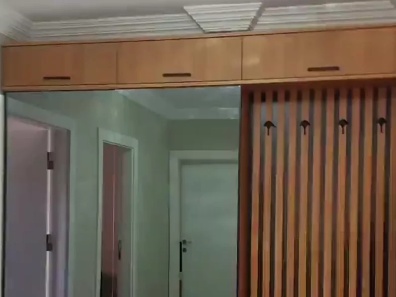
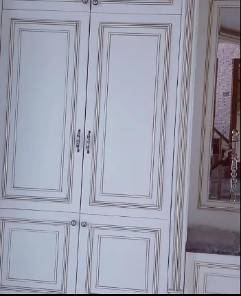
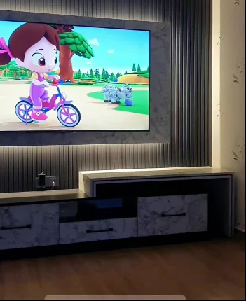
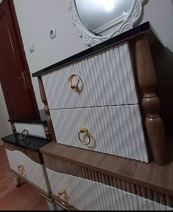
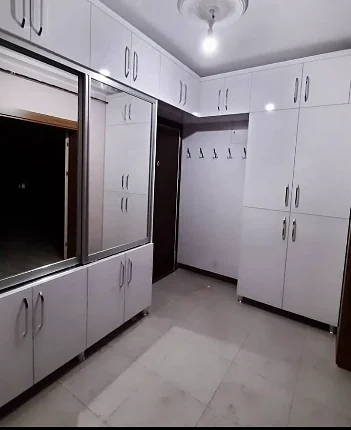
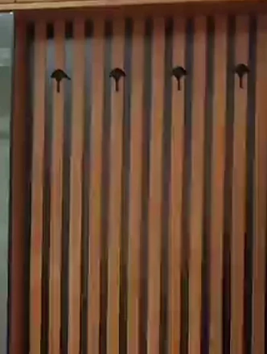
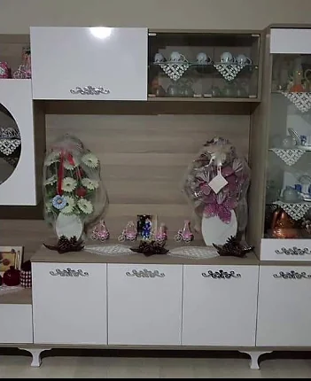
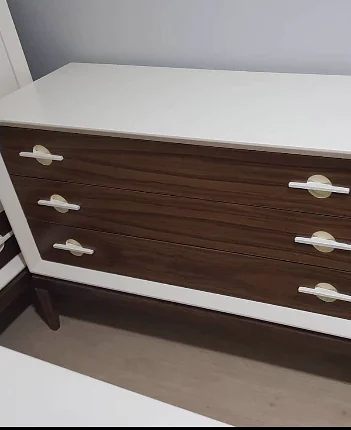
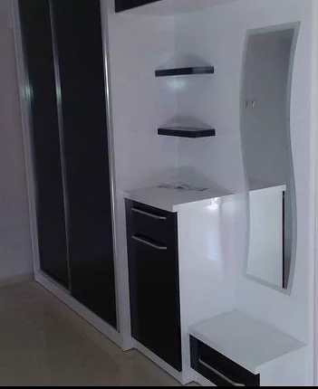
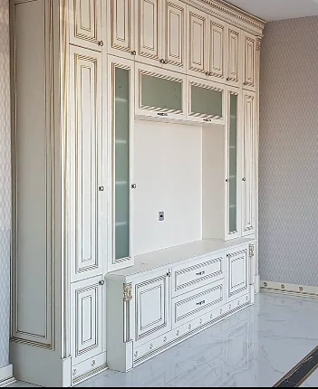
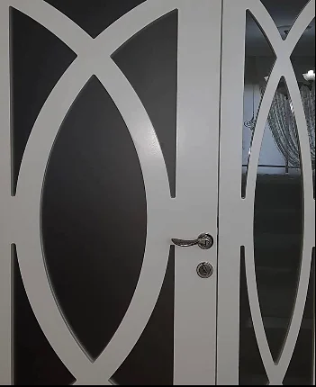
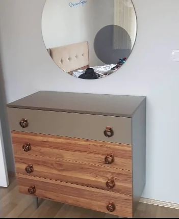
Fotoğraftan okunanlar
Projenin detayları.
- Üst dolap
- Tavana kadar, ahşap kaplama, ince siyah tutamaklı
- Ayna
- Zeminden üst dolaba kadar boy ayna
- Askı paneli
- Dikey ahşap çıtalar, dört askı
- Yerleşim
- Kapı ve koridor geçişinin çevresi tek düzen
Konum: Ankara. Malzeme markası ve kalınlıkları fotoğraftan okunmaz; her işte ayrıca konuşulur.
Girişte üç iş tek düzende çözülmüş: yukarıda depolama, ortada ayna, yanda askı.
Üst dolaplar tavana kadar çıkıyor ve geçişin üstünü boydan boya kaplıyor. Aynanın yansıması dar koridoru olduğundan geniş gösteriyor.
Askı paneli dikey çıtalarla yapılmış; askılar çıtaların arasına yerleşiyor. Aynı ahşap tonu üst dolapla paneli birbirine bağlıyor.
Devam edin
Başlangıç noktası
Mekânınızı bize gösterin.
Benzer bir iş için alanınızın fotoğraflarını gönderin; neyin nasıl uyarlanabileceğini birlikte konuşalım.
Siz hayal edin, biz yapalım.
Mekânınızı birlikte değerlendirelim.
Aklınızdaki mobilyayı, alanınızı ve ihtiyacınızı konuşalım. Fotoğraflarınızı WhatsApp'tan gönderin.
ya da konumu görün: Google Haritalar